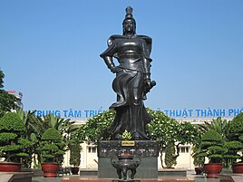
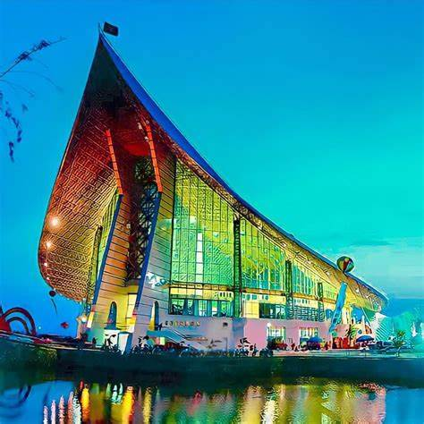
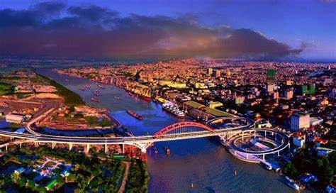

Quận Lê Chân

Quận Lê Chân nằm ở trung tâm thành phố Hải Phòng, có vị trí địa lý:
- Phía đông giáp quận Ngô Quyền
- Phía tây giáp huyện An Dương (qua sông Đào Hạ Lý) và quận Kiến An (qua sông Lạch Tray)
- Phía nam giáp quận Dương Kinh với ranh giới là sông Lạch Tray
- Phía bắc giáp quận Hồng Bàng.
Quận có diện tích 11,9 km², dân số năm 2019 là 219.762 người, mật độ dân số đạt 18.467 người/km².
Quận Dương Kinh

Quận Dương Kinh nằm ở phía đông nam nội thành của thành phố Hải Phòng, cách trung tâm thành phố khoảng 15 km, có vị trí địa lý:
- Phía đông giáp quận Hải An và vịnh Bắc Bộ
- Phía tây giáp quận Kiến An và huyện Kiến Thụy
- Phía nam giáp quận Đồ Sơn
- Phía bắc giáp quận Lê Chân và quận Ngô Quyền.
- Đây là địa phương có tuyến Đường cao tốc Hà Nội – Hải Phòng đi qua.
Huyện Thủy Nguyên

Huyện Thủy Nguyên nằm ở phía bắc ngoại thành của thành phố Hải Phòng, nằm cách trung tâm thành phố khoảng 13 km, có vị trí địa lý:
- Phía đông giáp thị xã Quảng Yên, tỉnh Quảng Ninh
- Phía tây giáp huyện An Dương và thị xã Kinh Môn, tỉnh Hải Dương
- Phía nam giáp quận Hồng Bàng, quận Ngô Quyền và quận Hải An
- Phía bắc giáp thành phố Uông Bí và thị xã Đông Triều thuộc tỉnh Quảng Ninh.
Các điểm cực của huyện Thủy Nguyên:
- Cực bắc ngã ba sông Kinh Thầy, sông Phi Liệt, sông Đá Bạc (sông Đá Vách) thuộc thôn Phi Liệt, xã Lại Xuân.
- Cực đông gần ngã ba sông Bạch Đằng và sông Giá, thôn Do Nghi, xã Tam Hưng.
- Cực nam trên sông Cấm gần cảng Hải Phòng, thôn Hữu Quan, xã Dương Quan.
- Cực tây trên sông Hàn (sông An Lưu), thôn Trại Sơn, xã An Sơn.
Huyện có diện tích 242,87 km², dân số năm 2019 là 333.810 người, mật độ dân số đạt 1.374 người/km².